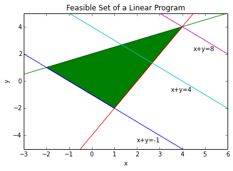
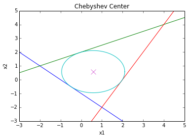

Linear program¶
Linear programming (LP) is one of the best known forms of convex optimization. A LP problem can be written as:
where \(x\), \(c\) and \(a_i\) for \(i=1,\ldots,m\) belong to \(\mathbb{R}^n\). In general, there is no analytical solution for a LP problem. A numerical algorithm is therefore required to solve the problem. The earliest algorithms for solving LP problems were the one developed by Kantorovich in 1940 \cite{Kantorovich40} and the simplex method proposed by George Dantzig in 1947 \cite{Dantzig91}. In 1978, the Russian mathematician L. G. Khachian developed a polynomial-time algorithm for solving linear programsthe Russian mathematician L. G. Khachian developed a polynomial-time algorithm for solving LP problems. This algorithm was an interior method, which was later improved by Karmarkar \cite{Karmarkar84}.
If some of the entries of \(x\) are required to be integers, we have a Mixed Integer Linear Programming (MILP) program. A MILP problem is in general difficult to solve (non-convex and NP-complete). However, in practice, the global optimum can be found for many useful MILP problems.
In general, the feasible set of a linear programming is a polyhedron. The objective function defines a family of parallel hyperplanes. The optimal value for the objective function is the lowest value corresponding to a hyperplane that has a non-empty intersection with the feasible set polyhedron. The intersection can be a vertice or edge or any higher dimensional faces. Therefore, the optimal value of the objective function is unique but the optimal solution, \(x^\star\), is not.
Example: Consider the following LP problem (LP1):
In order to solve this LP problem in Python, we need to import the required modules:
import numpy as np
from pylab import *
import matplotlib as mpl
import cvxopt as co
import cvxpy as cp
%pylab --no-import-all inline
Populating the interactive namespace from numpy and matplotlib
The next step is to define the optimization variables:
x = cp.Variable(1)
y = cp.Variable(1)
The constraints are then added:
constraints = [ x+y >= -1.,
0.5*x-y >= -2.,
2.*x-y <= 4.]
Then, the objective function and the optimization problem are defined as:
objective = cp.Maximize(x+y)
p = cp.Problem(objective, constraints)
The solution of the LP problem is computed with the following command:
result = p.solve()
print(round(result,5))
8.0
The optimal solution is now given by:
x_star = x.value
print(round(x_star,5))
4.0
y_star = y.value
print(round(y_star,5))
4.0
The feasible set of the LP problem (ref{LP1}) is shown in Figure ref{LPfeas}, which is drawn using the following commands:
xp = np.array([-3, 6])
# plot the constraints
plt.plot(xp, -xp-1, xp, 0.5*xp+2, xp, 2*xp-4)
# Draw the lines
plt.plot(xp, -xp+4, xp, -xp+8)
# Draw the feasible set (filled triangle)
path = mpl.path.Path([[4, 4], [1, -2], [-2, 1], [4, 4]])
patch = mpl.patches.PathPatch(path, facecolor='green')
# Add the triangle to the plot
plt.gca().add_patch(patch)
plt.xlabel('x')
plt.ylabel('y')
plt.title('Feasible Set of a Linear Program')
plt.xlim(-3,6)
plt.ylim(-5,5)
plt.text(2, -4.5, "x+y=-1")
plt.text(3.5, -0.75, "x+y=4")
plt.text(4.5, 2.25, "x+y=8")
plt.show()

Now, to solve the following LP problem (LP2):
we change the objective function in the code:
objective = cp.Minimize(x+y)
p = cp.Problem(objective, constraints)
result = p.solve()
print(round(result,5))
-1.0
The optimal solution is now given by:
x_star = x.value
print(round(x_star,5))
0.49742
y_star = y.value
print(round(y_star,5))
-1.49742
In this case the optimzal value of the objective function is unique. However, it can be seen in Figure ref{LPfeas} that any point on the line connecting the two points (-2,1) and (1,-2) including the point (0.49742,-1.49742) can be the optimal solution. Therefore, the LP problem ref{LP2} has infinite optimal solutions. The code, however, returns just one of the optimal solutions.
Example: Finding the Chebyshev center of a polyhedron is an example of optimization problems that can be solved using LP \cite{cvx}. However, the original description of the problem is not in LP form. Consider the following polyhedron: \begin{equation} \mathcal{P} = {x | a_i^Tx \leq b_i, i=1,…,m } \end{equation} The Chebyshev center of \(\mathcal{P}\) is the center of the largest ball in \(\mathcal{P}\): \begin{equation} \mathcal{B}={x||x-x_c|\leq r} \end{equation} In order for \(\mathcal{B}\) to be inside \(\mathcal{P}\), we need to have \(a_i^Tx\leq b_i\) for all \(x\) in \(\mathcal{B}\) and all \(i\) from \(1\) to \(m\). For each \(i\), the point with the largest value of \(a_i^Tx\) is: \($x^\star=x_c+\frac{r}{\sqrt{a_i^Ta_i}}a_i=x_c+\frac{r}{\|a_i\|_2}a_i\)$ Therefore, if we have: \($a_i^Tx_c+r\|a_i\|_2\leq b_i\)$ for all \(i=1,..,m\) then \(\mathcal{B}\) is inside \(\mathcal{P}\). Now, we can write the problem as the following LP problem (LP3):
As a numerical example, consider a polyhedron \(\mathcal{P}\) where:
This is a triangle. The Chebyshev center of this triangle is computed as:
r = cp.Variable(1)
xc = cp.Variable(2)
a1 = co.matrix([-1,-1], (2,1))
a2 = co.matrix([-0.5,1], (2,1))
a3 = co.matrix([2,-1], (2,1))
b1 = 1
b2 = 2
b3 = 4
constraints = [ a1.T*xc + np.linalg.norm(a1, 2)*r <= b1,
a2.T*xc + np.linalg.norm(a2, 2)*r <= b2,
a3.T*xc + np.linalg.norm(a3, 2)*r <= b3 ]
objective = cp.Maximize(r)
p = cp.Problem(objective, constraints)
result = p.solve()
The radius of the ball is:
print r.value
1.52896116777
and the Chebyshev center is located at:
print xc.value
[ 5.81e-01]
[ 5.81e-01]
The triangle and the largest circle that it can include are depicted in Figure ref{Cheb} using the following commands:
xp = np.linspace(-3, 5, 256)
theta = np.linspace(0,2*np.pi,100)
# plot the constraints
plt.plot( xp, -xp*a1[0]/a1[1] + b1/a1[1])
plt.plot( xp, -xp*a2[0]/a2[1] + b2/a2[1])
plt.plot( xp, -xp*a3[0]/a3[1] + b3/a3[1])
# plot the solution
plt.plot( xc.value[0] + r.value*cos(theta), xc.value[1] + r.value*sin(theta) )
plt.plot( xc.value[0], xc.value[1], 'x', markersize=10 )
plt.title('Chebyshev Center')
plt.xlabel('x1')
plt.ylabel('x2')
plt.axis([-3, 5, -3, 5])
plt.show()
